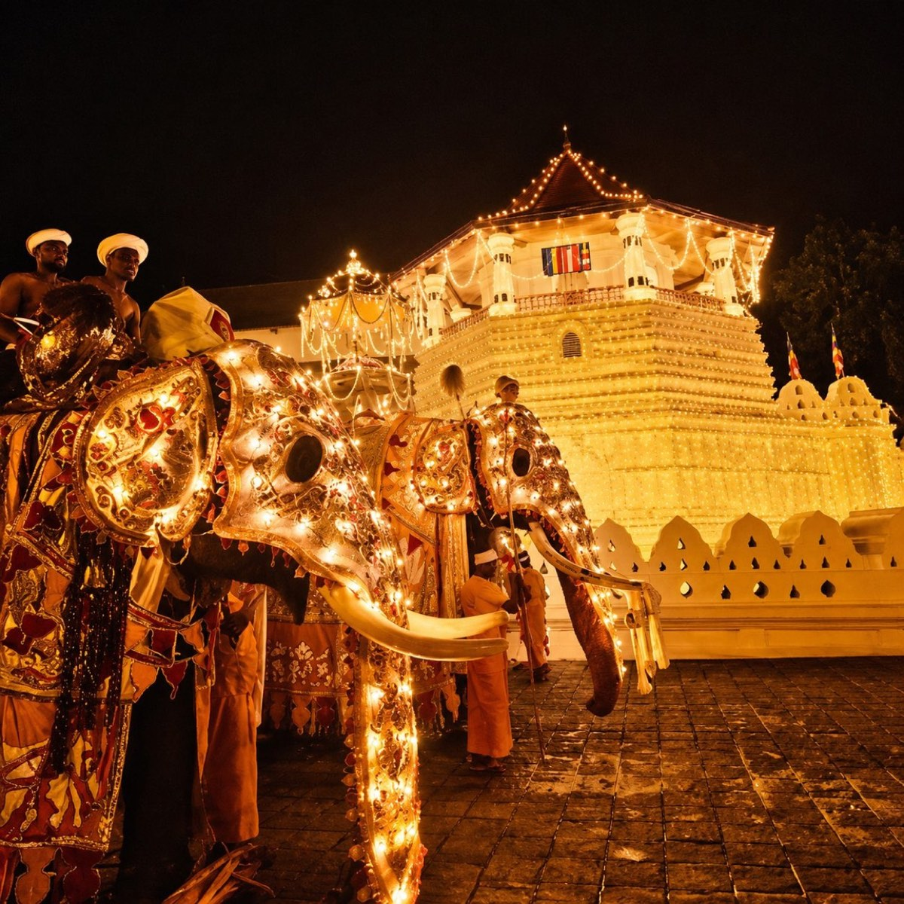
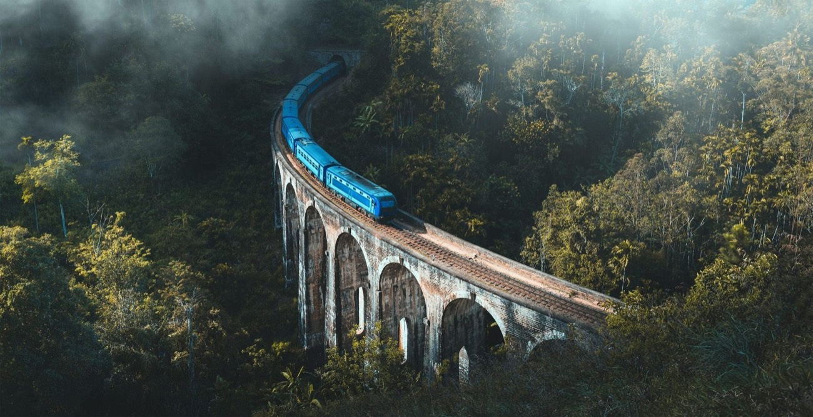
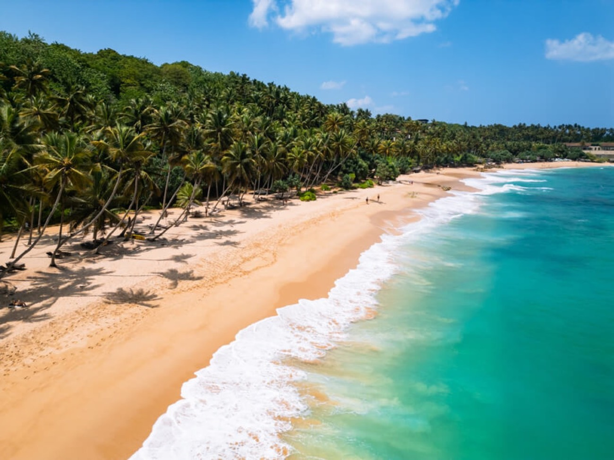
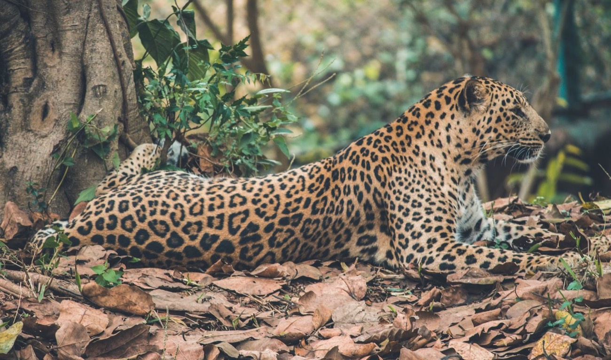

One island, five very different regions
How the country fits together — and why most trips string two or three of these regions into one route.
Short distances, big changes in scenery
Sri Lanka is roughly the size of Ireland, but the terrain shifts fast: dry-zone plains and ancient cities in the centre-north, tea mountains in the middle, rainforest on the wet slopes, and beaches all the way round. Roads are winding rather than fast, so a driver-guide makes the difference.
Cultural Triangle
Sigiriya, Polonnaruwa, Anuradhapura and Dambulla — the old royal capitals, ringed around Kandy and its temple of the sacred tooth relic.
This is the history-heavy stretch: climbing the rock fortress at dawn, cave temples full of Buddha images, ruined dagobas the size of hills, and forest monasteries. Most people give it two to three nights, based near Sigiriya or Habarana.
- Sigiriya rock fortress & frescoes
- Dambulla cave temples
- Polonnaruwa by bicycle
- Anuradhapura's sacred city
- Minneriya / Kaudulla elephant gatherings
- Temple of the Tooth, Kandy


Hill Country
Nuwara Eliya, Ella, Haputale and Hatton — tea estates on every slope, cool air, waterfalls and the train ride people plan whole trips around.
The Kandy-to-Ella train is one of the world's great rail journeys; we usually put you on the scenic middle section with a car meeting you at the other end. Add plantation walks, a tea-factory visit and the hike to World's End in Horton Plains.
- Scenic hill-country train
- Nine Arch Bridge, Ella
- Horton Plains & World's End
- Tea factory & tasting
- Little Adam's Peak at sunrise
- Adam's Peak pilgrimage (in season)
South Coast
Galle, Unawatuna, Mirissa, Weligama and Tangalle — the classic end-of-trip beaches, with the Dutch fort at Galle to break up the sand.
Calm swimming bays, surf schools for beginners, blue-whale boats out of Mirissa between December and April, and stilt fishermen at dawn. Two to four nights here is a common way to finish before flying home from Colombo.
- Galle Fort ramparts at sunset
- Whale watching from Mirissa
- Beginner surf at Weligama
- Turtle hatcheries near Kosgoda
- Madu River boat safari
- Quiet sands at Tangalle


National Parks
Yala, Udawalawe, Wilpattu, Kumana and Bundala — leopards, sloth bears, elephant herds and enormous birdlife, mostly on open-jeep game drives.
Yala has the highest leopard density but gets busy; Wilpattu is wilder and quieter; Udawalawe is the reliable one for elephants. Early-morning drives are worth the alarm clock. We arrange the park jeep and a naturalist alongside your touring vehicle.
- Leopard tracking in Yala & Wilpattu
- Elephants at Udawalawe
- Sloth bear sightings (Feb–Jul)
- Bundala for migratory birds
- Sinharaja rainforest walk
- Gal Oya boat safari
East & Adventure
Arugam Bay, Trincomalee, Passikudah and Kitulgala — the east comes into its own from May to September, when the south is wet.
Arugam Bay is the surf capital; Trinco has some of the island's clearest water and whale watching of its own; Kitulgala, inland, is where the white-water rafting and canyoning happen. Good for a second visit, or for travellers chasing the dry season.
- Surf at Arugam Bay (May–Sep)
- Snorkelling at Pigeon Island, Trinco
- White-water rafting, Kitulgala
- Whale watching off Trincomalee
- Maritime & hot springs, Kanniya
- Quiet beaches at Passikudah

Not sure how to combine these?
Tell us how long you have and which regions appeal — we'll draft a route that flows.